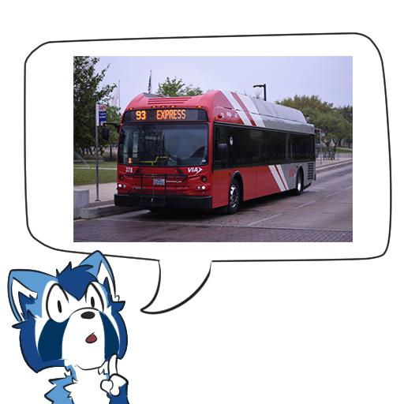

About
I am a student studying Mathematics and Computer Science at Carnegie Mellon University.
I have experience using C, Rust, SML, Python, Lean 4, LaTeX, Typst, HTML, CSS, and a variety of other languages. I am fondest of SML and Rust for programming things; Rust for its performance and ecosystem, SML for its elegant syntax and distinct approach to the writing of programs. My first experience with typesetting was LaTeX in 2015 and my first experience with programming was with Python in 2023.
I run one version of each (modulo technicalities) major operating system: my desktop dualboots Windows 11 and Arch Linux, though I spend more time on my Windows 11 install because it is a bit easier on me (at least for now). My laptop runs macOS 15.
I know people can be cargo-culty about editors, but I try my best to use something that lets me get work done since I know that if I were to care enough, the amount of time saved in some tasks would be nullified by the amount of time spent fidgeting and getting <1% performance increases. Anyway, I use:
- Visual Studio Code as a general purpose editor (mostly for Rust at this point)
- Neovim as a general purpose editor (I am still learning the keybindings and gradually getting better at using them. I am finding it more and more fun by the day!)
Also, did I mention I like transit? Because I like transit. 
My favorite bus ever is VIA’s 2010 DE40LFR hybrid. It had by far the most comfortable ride quality I’ve ever experienced on a transit vehicle, great AC, great seats, and unmatched memories. I’m only sad I won’t get to ride it anymore. Here’s a playlist of some videos of them I made.
This page is subject to rewrites on a personal whim :P